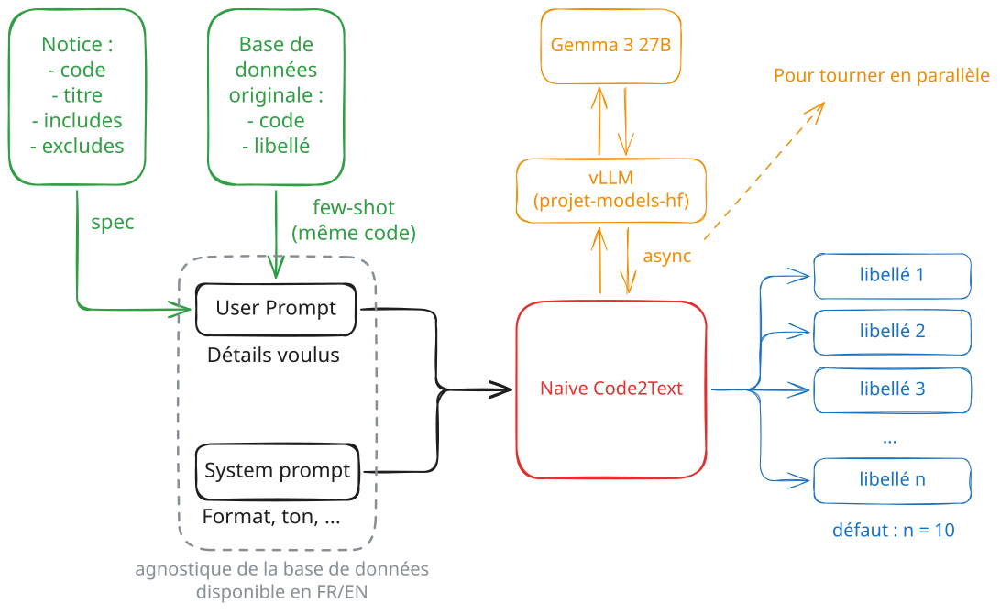
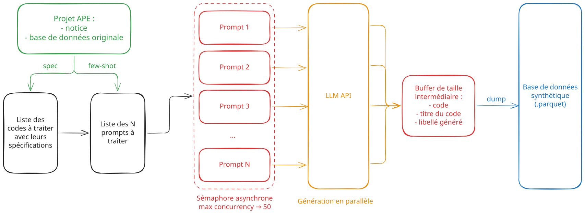
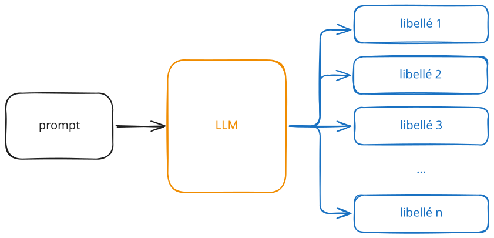
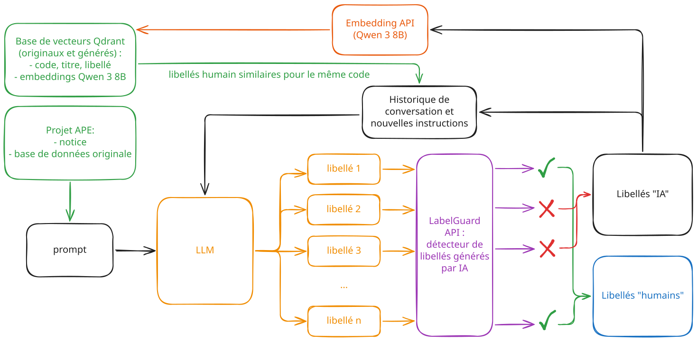
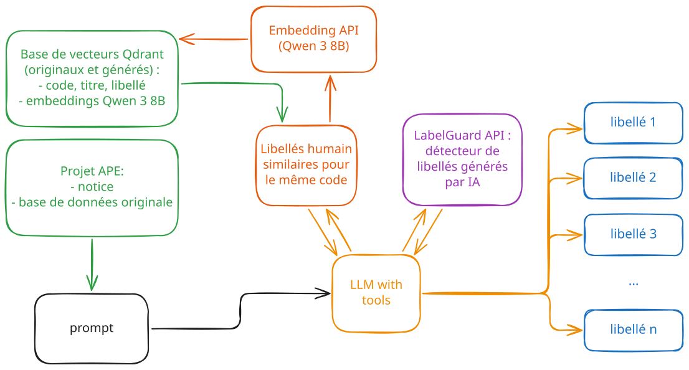
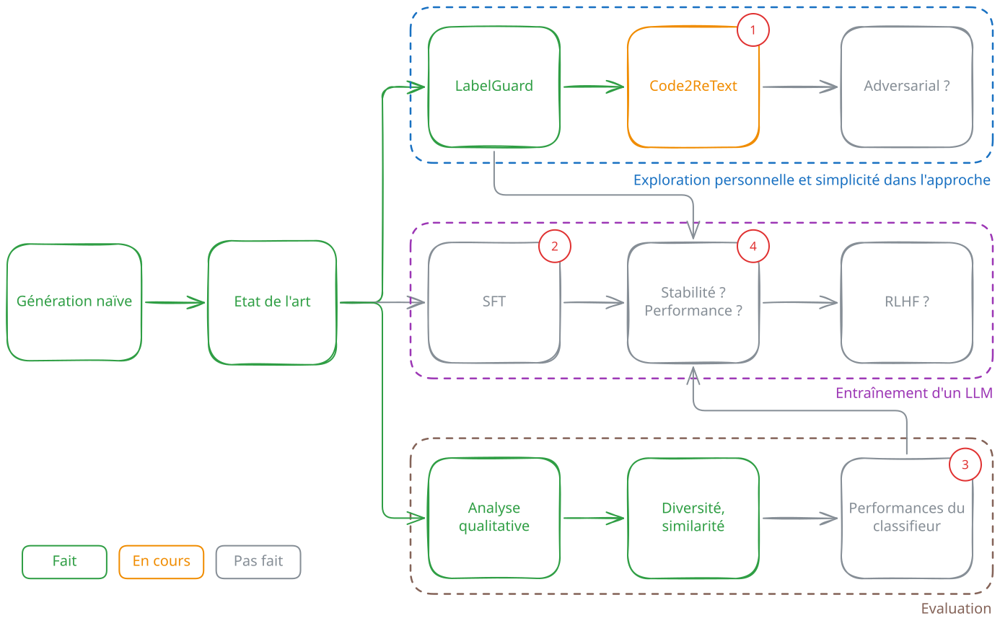

Générer des libellés pour de la codification automatique
5 juillet 2027
La codification automatique de libellés
Objectif initial : codifier des libellés dans une nomenclature.
On détient une notice associée à la nomenclature :
code, titre, includes, excludes.On détient parfois déjà des paires libellés/code issues de données réelles.
Plusieurs difficultés majeures à l’apprentissage :
→ Sans génération de données synthétiques, la codification automatique peut être imprécise voire impossible.
La génération de données habituelle repose sur la donnée entrante uniquement :
Dans notre cas, on détient une notice pour la nomenclature :
Objectifs généraux pour la génération de donnée :
Les objectifs ne convergent pas forcément autour d’un unique outil :
Axes majeurs à explorer :
On recherche de bonnes performances dans ces trois domaines indépendamment du code derrière les libellés générés.
Génération augmentée par la notice

On prend le schéma précédent, et on l’adapte pour lancer des requêtes API en parallèle :

Points positifs :
Point négatif majeur : la donnée est “trop parfaite”
→ Données peu exploitables
Ajouter un niveau de profondeur
Entraînement d’un discriminateur IA/humain sur les embeddings des libellés (dim = 4096) :
Résultat : MLP (4096 → 1024 → 256 → 1) avec dropout initial (0.3)
→ Déploiement sur une API : https://labelguard.lab.sspcloud.fr/



Améliorer Code2ReText
Passer au Supervised Fine Tuning (SFT)
Evaluer précisément les générateurs (benchmark final)
Mettre en production le générateur performant
